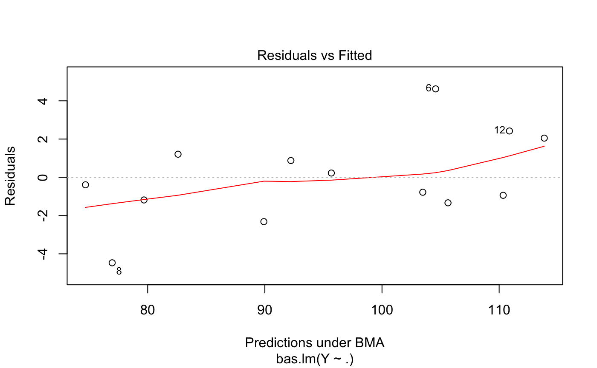
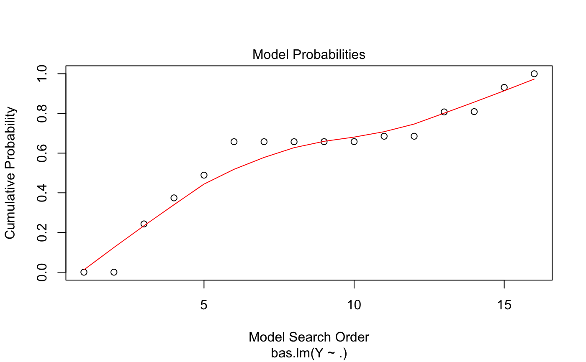
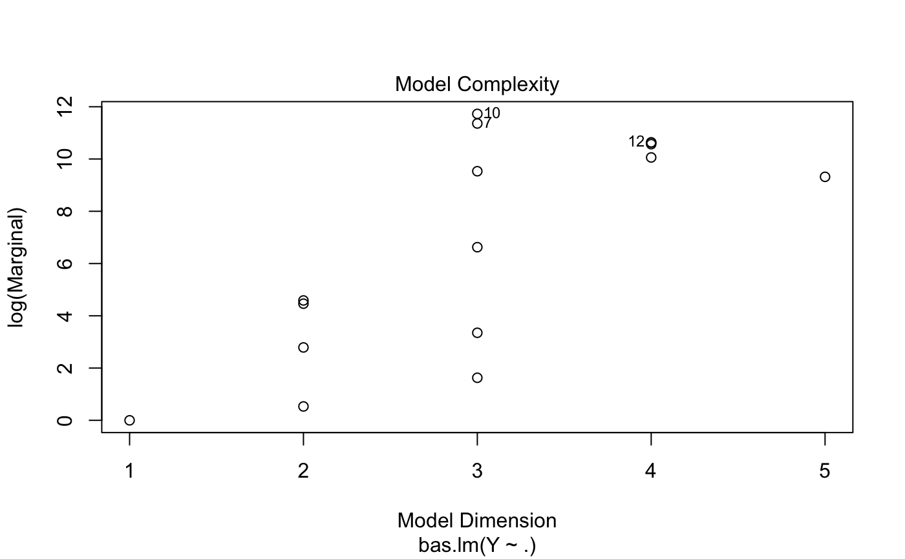
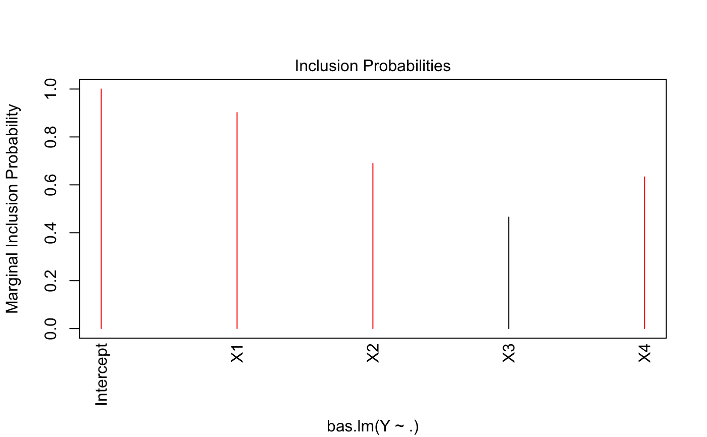
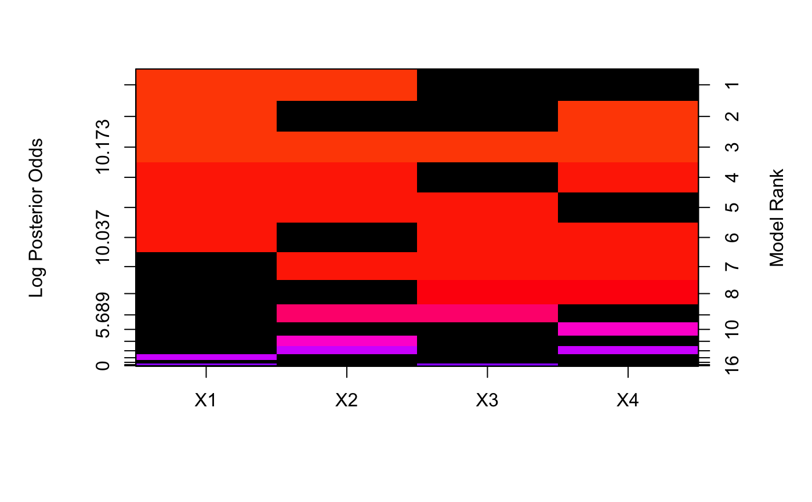
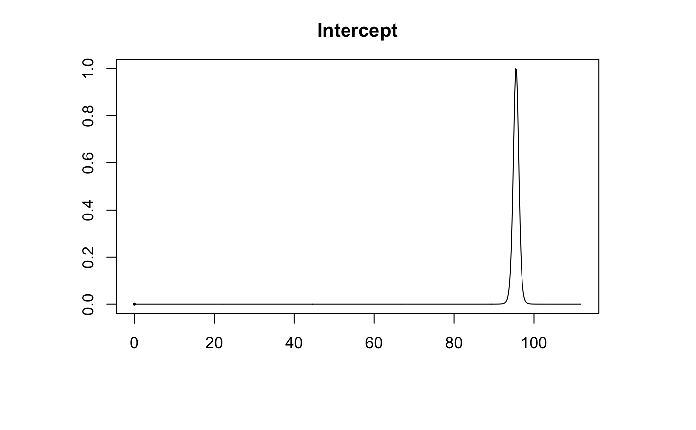
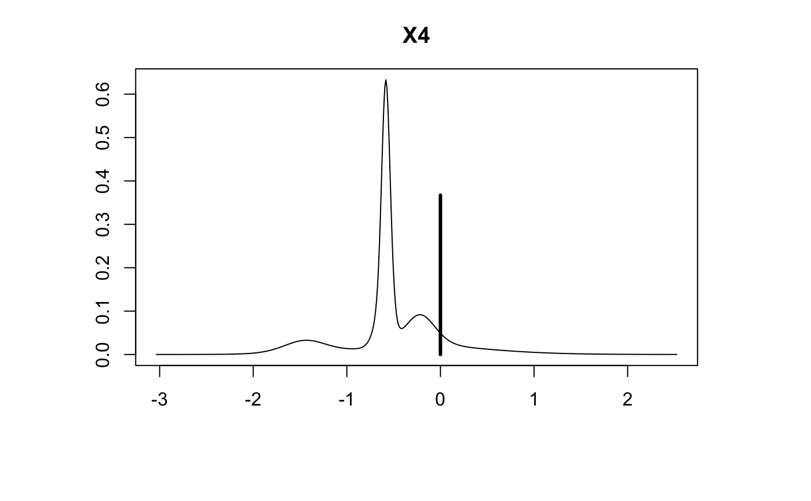

Package for Bayesian Model Averaging in linear models using stochastic or deterministic sampling without replacement from posterior distributions. Prior distributions on coefficients are of the form of Zellner's g-prior or mixtures of g-priors. Options include the Zellner-Siow Cauchy Priors, the Liang et al hyper-g priors, Local and Global Empirical Bayes estimates of g, and other default model selection criteria such as AIC and BIC. Sampling probabilities may be updated based on the sampled models.
Details
| Package: | BAS |
| Depends: | R (>= 2.8) |
| License: | GPL-2 |
| URL: http://www.stat.duke.edu/~clyde |
Index:
References
Clyde, M. Ghosh, J. and Littman, M. (2010) Bayesian Adaptive
Sampling for Variable Selection and Model Averaging. Journal of
Computational Graphics and Statistics. 20:80-101
http://dx.doi.org/10.1198/jcgs.2010.09049
Clyde, M. and George, E. I. (2004) Model uncertainty. Statist. Sci., 19,
81-94.
http://dx.doi.org/10.1214/088342304000000035
Clyde, M. (1999) Bayesian Model Averaging and Model Search Strategies (with discussion). In Bayesian Statistics 6. J.M. Bernardo, A.P. Dawid, J.O. Berger, and A.F.M. Smith eds. Oxford University Press, pages 157-185.
Li, Y. and Clyde, M. (2015) Mixtures of g-priors in Generalized Linear Models. http://arxiv.org/abs/1503.06913
Liang, F., Paulo, R., Molina, G., Clyde, M. and Berger, J.O. (2008) Mixtures
of g-priors for Bayesian Variable Selection. Journal of the American
Statistical Association. 103:410-423.
http://dx.doi.org/10.1198/016214507000001337
See also
Other bas methods: bas.lm,
coef.bas, confint.coef.bas,
confint.pred.bas,
diagnostics, fitted.bas,
force.heredity.bas,
image.bas, predict.basglm,
predict.bas, summary.bas,
update.bas,
variable.names.pred.bas
Examples
data("Hald") hald.gprior = bas.lm(Y ~ ., data=Hald, alpha=13, prior="g-prior") # more complete demos demo(BAS.hald)#> #> #> demo(BAS.hald) #> ---- ~~~~~~~~ #> #> > data(Hald) #> #> > hald.gprior = bas.lm(Y~ ., data=Hald, prior="g-prior", alpha=13, #> + modelprior=beta.binomial(1,1), #> + initprobs="eplogp") #> #> > hald.gprior #> #> Call: #> bas.lm(formula = Y ~ ., data = Hald, prior = "g-prior", alpha = 13, #> modelprior = beta.binomial(1, 1), initprobs = "eplogp") #> #> #> Marginal Posterior Inclusion Probabilities: #> Intercept X1 X2 X3 X4 #> 1.0000 0.9019 0.6896 0.4653 0.6329 #> #> > plot(hald.gprior)#> #> > summary(hald.gprior) #> P(B != 0 | Y) model 1 model 2 model 3 model 4 model 5 #> Intercept 1.0000000 1.00000 1.0000000 1.00000000 1.0000000 1.0000000 #> X1 0.9019245 1.00000 1.0000000 1.00000000 1.0000000 1.0000000 #> X2 0.6895830 1.00000 0.0000000 1.00000000 1.0000000 1.0000000 #> X3 0.4652762 0.00000 0.0000000 1.00000000 0.0000000 1.0000000 #> X4 0.6329266 0.00000 1.0000000 1.00000000 1.0000000 0.0000000 #> BF NA 1.00000 0.6923944 0.08991408 0.3355714 0.3344926 #> PostProbs NA 0.24320 0.1684000 0.13120000 0.1224000 0.1220000 #> R2 NA 0.97870 0.9725000 0.98240000 0.9823000 0.9823000 #> dim NA 3.00000 3.0000000 5.00000000 4.0000000 4.0000000 #> logmarg NA 11.72735 11.3597547 9.31845348 10.6354335 10.6322138 #> #> > image(hald.gprior, subset=-1, vlas=0)#> #> > hald.coef = coefficients(hald.gprior) #> #> > hald.coef #> #> Marginal Posterior Summaries of Coefficients: #> #> Using BMA #> #> Based on the top 16 models #> post mean post SD post p(B != 0) #> Intercept 95.4231 0.7107 1.0000 #> X1 1.2150 0.5190 0.9019 #> X2 0.2756 0.4832 0.6896 #> X3 -0.1271 0.4976 0.4653 #> X4 -0.3269 0.4717 0.6329 #> #> > plot(hald.coef)#> #> > predict(hald.gprior, top=5, se.fit=TRUE) #> $fit #> [,1] #> [1,] 79.74246 #> [2,] 74.50010 #> [3,] 105.29268 #> [4,] 89.88693 #> [5,] 95.57177 #> [6,] 104.56409 #> [7,] 103.40145 #> [8,] 77.13668 #> [9,] 91.99731 #> [10,] 114.21325 #> [11,] 82.78446 #> [12,] 111.00723 #> [13,] 110.40160 #> #> $Ybma #> [,1] #> [1,] 79.74246 #> [2,] 74.50010 #> [3,] 105.29268 #> [4,] 89.88693 #> [5,] 95.57177 #> [6,] 104.56409 #> [7,] 103.40145 #> [8,] 77.13668 #> [9,] 91.99731 #> [10,] 114.21325 #> [11,] 82.78446 #> [12,] 111.00723 #> [13,] 110.40160 #> #> $Ypred #> [,1] [,2] [,3] [,4] [,5] [,6] [,7] [,8] #> [1,] 81.17036 74.83464 105.0725 89.69881 97.15898 104.4575 103.3893 76.06454 #> [2,] 77.70296 74.24113 105.8554 90.46267 93.09565 104.7152 103.1399 78.80193 #> [3,] 79.70437 74.40553 105.2175 89.76253 95.63309 104.5709 103.5254 77.08557 #> [4,] 79.65151 74.47846 105.4218 89.83174 95.62799 104.5962 103.5068 77.00839 #> [5,] 79.84321 74.31409 104.9063 89.65651 95.70301 104.5285 103.5476 77.15919 #> [,9] [,10] [,11] [,12] [,13] #> [1,] 91.57174 113.1722 81.59906 111.2219 111.0884 #> [2,] 92.68123 115.8058 84.50293 110.4162 109.0791 #> [3,] 91.98604 114.1759 82.78145 111.1196 110.5321 #> [4,] 92.07571 114.1088 82.68233 111.0429 110.4674 #> [5,] 91.83513 114.2353 82.88128 111.2384 110.6515 #> #> $postprobs #> [1] 0.3089304 0.2139017 0.1666632 0.1555023 0.1550024 #> #> $se.fit #> [,1] [,2] [,3] [,4] [,5] [,6] [,7] [,8] #> [1,] 2.220164 2.265862 1.546911 2.181188 1.310135 1.523300 2.655096 2.176560 #> [2,] 2.716798 2.389723 1.633637 2.179215 1.321062 1.581232 2.721957 2.078129 #> [3,] 3.203405 2.501485 3.279273 2.357164 2.589756 1.549136 2.623290 2.765255 #> [4,] 3.117350 2.283957 1.602160 2.149087 2.589321 1.508471 2.610923 2.545817 #> [5,] 2.932580 2.353352 1.538009 2.141694 2.507848 1.498758 2.616407 2.680289 #> [,9] [,10] [,11] [,12] [,13] #> [1,] 1.883610 3.264656 1.908238 1.970691 2.054234 #> [2,] 2.013244 3.298134 1.933819 1.964374 1.924460 #> [3,] 2.353516 3.609909 2.821295 2.227363 2.390135 #> [4,] 1.990817 3.485929 2.456636 1.951456 2.212238 #> [5,] 1.889302 3.569065 2.665166 1.934336 2.117189 #> #> $se.pred #> [,1] [,2] [,3] [,4] [,5] [,6] [,7] [,8] #> [1,] 5.057182 5.077410 4.799885 5.040193 4.728892 4.792328 5.262651 5.038191 #> [2,] 5.415848 5.259391 4.961773 5.167146 4.867815 4.944766 5.418438 5.125333 #> [3,] 5.489152 5.111401 5.533771 5.042342 5.155175 4.718984 5.172102 5.245534 #> [4,] 5.440156 5.009380 4.737547 4.949344 5.155775 4.706689 5.166658 5.134065 #> [5,] 5.337427 5.042456 4.717369 4.947217 5.116386 4.704719 5.170463 5.203081 #> [,9] [,10] [,11] [,12] [,13] #> [1,] 4.918734 5.594992 4.928218 4.952735 4.986566 #> [2,] 5.099370 5.729582 5.068538 5.080274 5.064974 #> [3,] 5.040638 5.735890 5.275291 4.982985 5.057839 #> [4,] 4.882702 5.659428 5.090431 4.866787 4.977090 #> [5,] 4.843301 5.711946 5.195307 4.861045 4.936658 #> #> $se.bma.fit #> [1] 2.688224 2.095245 1.769625 1.970919 2.197285 1.363804 2.356457 2.302631 #> [9] 1.822084 3.141443 2.237663 1.801849 1.991374 #> #> $se.bma.pred #> [1] 4.838655 4.536087 4.395180 4.480017 4.584113 4.248058 4.662502 4.635531 #> [9] 4.416563 5.104380 4.603604 4.408253 4.489054 #> #> $df #> [1] 12 12 12 12 12 #> #> $best #> [1] 10 7 13 12 8 #> #> $bestmodel #> $bestmodel[[1]] #> [1] 0 1 2 #> #> $bestmodel[[2]] #> [1] 0 1 4 #> #> $bestmodel[[3]] #> [1] 0 1 2 3 4 #> #> $bestmodel[[4]] #> [1] 0 1 2 4 #> #> $bestmodel[[5]] #> [1] 0 1 2 3 #> #> #> $best.vars #> [1] "Intercept" "X1" "X2" "X3" "X4" #> #> $estimator #> [1] "BMA" #> #> attr(,"class") #> [1] "pred.bas" #> #> > confint(predict(hald.gprior, Hald, estimator="BMA", se.fit=TRUE, top=5), parm="mean") #> 2.5% 97.5% mean #> [1,] 73.45384 86.13623 79.74246 #> [2,] 69.45028 79.57788 74.50010 #> [3,] 100.83018 109.79956 105.29268 #> [4,] 85.25497 94.91468 89.88693 #> [5,] 90.16067 100.03923 95.57177 #> [6,] 101.14733 107.86932 104.56409 #> [7,] 97.59231 108.96862 103.40145 #> [8,] 71.61742 82.56171 77.13668 #> [9,] 87.36232 96.09026 91.99731 #> [10,] 106.63677 122.04543 114.21325 #> [11,] 77.51796 88.32283 82.78446 #> [12,] 106.67007 115.48781 111.00723 #> [13,] 105.68132 115.17511 110.40160 #> attr(,"Probability") #> [1] 0.95 #> attr(,"class") #> [1] "confint.bas" #> #> > predict(hald.gprior, estimator="MPM", se.fit=TRUE) #> $fit #> [1] 79.65151 74.47846 105.42183 89.83174 95.62799 104.59616 103.50684 #> [8] 77.00839 92.07571 114.10876 82.68233 111.04286 110.46741 #> attr(,"model") #> [1] 0 1 2 4 #> attr(,"best") #> [1] 1 #> attr(,"estimator") #> [1] "MPM" #> #> $Ybma #> [1] 79.65151 74.47846 105.42183 89.83174 95.62799 104.59616 103.50684 #> [8] 77.00839 92.07571 114.10876 82.68233 111.04286 110.46741 #> attr(,"model") #> [1] 0 1 2 4 #> attr(,"best") #> [1] 1 #> attr(,"estimator") #> [1] "MPM" #> #> $Ypred #> NULL #> #> $postprobs #> NULL #> #> $se.fit #> [1] 3.117350 2.283957 1.602160 2.149087 2.589321 1.508471 2.610923 2.545817 #> [9] 1.990817 3.485929 2.456636 1.951456 2.212238 #> #> $se.pred #> [1] 5.440156 5.009380 4.737547 4.949344 5.155775 4.706689 5.166658 5.134065 #> [9] 4.882702 5.659428 5.090431 4.866787 4.977090 #> #> $se.bma.fit #> NULL #> #> $se.bma.pred #> NULL #> #> $df #> [1] 12 #> #> $best #> NULL #> #> $bestmodel #> [1] 0 1 2 4 #> #> $best.vars #> [1] "Intercept" "X1" "X2" "X4" #> #> $estimator #> [1] "MPM" #> #> attr(,"class") #> [1] "pred.bas" #> #> > confint(predict(hald.gprior, Hald, estimator="MPM", se.fit=TRUE), parm="mean") #> 2.5% 97.5% mean #> [1,] 72.85939 86.44363 79.65151 #> [2,] 69.50215 79.45478 74.47846 #> [3,] 101.93102 108.91264 105.42183 #> [4,] 85.14928 94.51420 89.83174 #> [5,] 89.98634 101.26964 95.62799 #> [6,] 101.30948 107.88283 104.59616 #> [7,] 97.81813 109.19556 103.50684 #> [8,] 71.46153 82.55525 77.00839 #> [9,] 87.73810 96.41333 92.07571 #> [10,] 106.51357 121.70394 114.10876 #> [11,] 77.32978 88.03488 82.68233 #> [12,] 106.79101 115.29472 111.04286 #> [13,] 105.64736 115.28746 110.46741 #> attr(,"Probability") #> [1] 0.95 #> attr(,"class") #> [1] "confint.bas" #> #> > fitted(hald.gprior, estimator="HPM") #> [1] 81.17036 74.83464 105.07248 89.69881 97.15898 104.45753 103.38927 #> [8] 76.06454 91.57174 113.17222 81.59906 111.22195 111.08841 #> #> > hald.gprior = bas.lm(Y~ ., data=Hald, n.models=2^4, #> + prior="g-prior", alpha=13, modelprior=uniform(), #> + initprobs="eplogp") #> #> > hald.EB = update(hald.gprior, newprior="EB-global") #> #> > hald.bic = update(hald.gprior,newprior="BIC") #> #> > hald.zs = update(hald.bic, newprior="ZS-null")# NOT RUN { demo(BAS.USCrime) # }